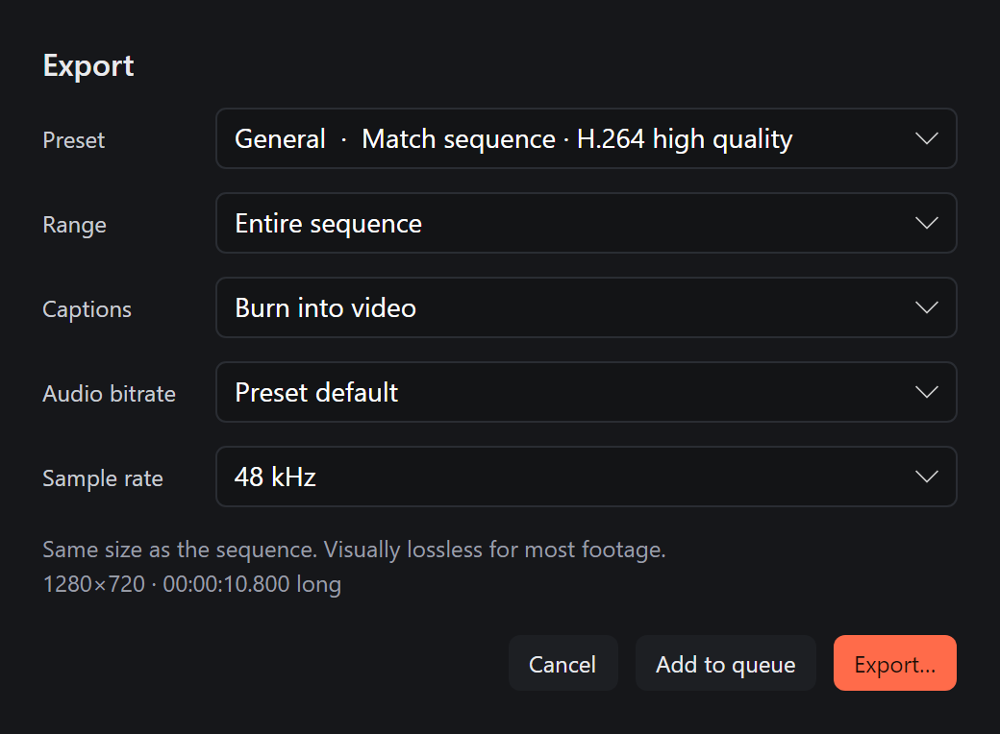

REC · ALWAYS ON
That was the playof the night.
ZenithClipperwas.
The rolling buffer
It keeps the last
minutes of everything.
Quietly, in the background, on disk instead of in memory. Hardware encoding on your GPU, so your game keeps its frames.
89 MBRAM while recording
1.4%average CPU
1:00:00of history, or more
Instant replay
One key.
It's a clip.
Pick how far back, press Alt+C, and the last two minutes are a file. Saving takes about a fifth of a second.
Alt+C
The editor
Then make it yours.
- Drag it in
- Scrub
- Ctrl+K split
- Trim
- Add a clip
- Title
- Play it back
Export
Send it anywhere.

Any game
Whatever
you play.
NVIDIA NVENCAMD AMFIntel Quick SyncWindows 10 & 11Linux
If the hardware encoder can't start, ZenithClipper tells you. It never quietly switches to CPU encoding behind your back.
Compare
Lighter than
the rest.
ZenithClippermeasured while recording 1600p at 165 fps89 MB [1]
MedalMedal's own figure100–400 MB [2]
OBS replay bufferbefore the buffer, which lives in RAM350–500 MB [3]
NVIDIA Appoverlay processes, same laptop534 MB [4]
SteelSeries Momentsno published figure– [5]
- [1] Peak resident memory, final build, 2560×1600 at 165 fps with NVENC, Ryzen 7 8845HS + RTX 4060 laptop, Nov 2026. BENCHMARKS.md
- [2] "100 to 400MB of RAM while recording", medal.tv, no test setup given.
- [3] WeaverClip replay buffer calculator.
- [4] Working set of the NVIDIA Overlay and ShadowPlay helper processes on the same laptop, Nov 17 2026. Driver services not counted.
- [5] SteelSeries doesn't publish one and we found no reliable test.
| ZenithClipper | Medal | NVIDIA App | OBS | Moments | |
|---|---|---|---|---|---|
| Windows and Linux | y | n | n | y | n |
| NVIDIA, AMD and Intel GPUs | y | y | n | y | y |
| Built-in clip editor | y | y | n | n | y |
| No account needed to clip | y | n | y | y | y |
| Under 100 MB of RAM while recording | y | n | n | n | q |
From each product's own pages as of November 2026 and the figures above.
Never miss
it again.
Free. Windows installer or portable zip, Linux AppImage, .deb or tarball. Every file has a SHA256 checksum on the release page.